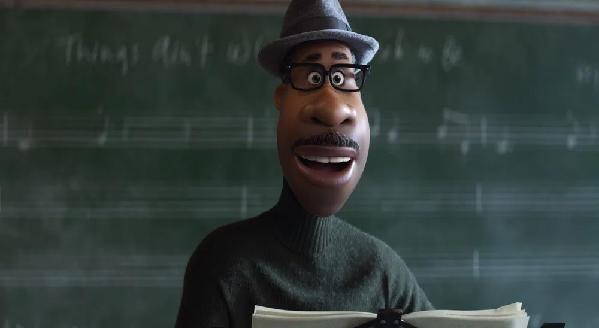
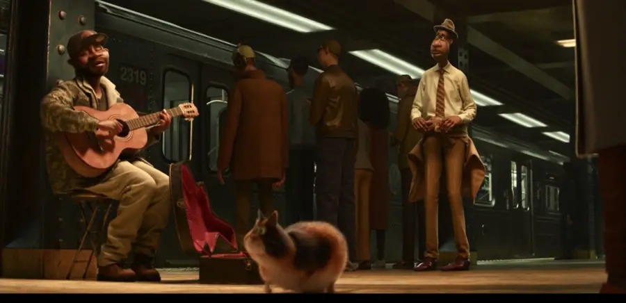

Soul
“Soul” introduces Joe Gardner (voice of Jamie Foxx) – a middle-school band teacher who has a passion for jazz. “Joe wants more than anything to become a professional jazz pianist,” says director Pete Docter. “So when he’s offered a rare, once-in-a-lifetime opportunity to play with one of the greats, Joe feels he’s reached the top of the ultimate mountain.”
But one small misstep takes him from the streets of New York City to The Great Before – a fantastical place where new souls get their personalities, quirks and interests before they go to Earth. According to Docter, the idea for this unique world was 23 years in the making. “It started with my son—he’s 23 now—but the instant he was born, he already had a personality,” says Docter. “Where did that come from? I thought your personality developed through your interaction with the world. And yet, it was pretty clear that we’re all born with a very unique, specific sense of who we are.
New York City
Filmmakers sought to set “Soul” in a recognizable city to ground that part of the film. “As soon as we landed on jazz, we started to explore New York City,” says Docter. “Though jazz didn’t originate there, New York is the jazz capital of America. It is a center of culture, full of immigrants and influences from around the world. It’s a rich and vibrant place to feature a film.”
According to co-director Kemp Powers, the Big Apple’s connection to jazz was powerful. “Jazz is a uniquely American art form, and New York City has one of the strongest histories of jazz—some of the most famous musicians are known for their performances in New York City.
“But it’s not just about the music,” continues Powers, who grew up in the city. “It’s about the dynamism of that world. Soul’ is a story about the meaning of life and the connections we make with each other. In New York, people are literally bumping up against one another. Diversity is visually evident on every single street. There’s really no place quite like it.”
Joe Gardner

A middle-school band teacher, Joe Gardner’s life hasn’t quite gone the way he’s expected. While teaching is a noble profession, his true passion is playing jazz, and he’s good. Joe believes he was born to play professionally, and though he’s 46 years old, he feels his opportunity to land a high-profile gig could come any day. Joe has an encyclopedic knowledge of jazz history, and even if his passion for music may have hampered his social life over the years, it hasn’t hampered his confidence. He lives alone, immersing himself in what he loves best: music. That is, until a single unexpected step sends him to the cosmic realms where he finds the “You Seminar” and is forced to think again about what his life is all about.
22
22 is a precocious soul who has spent hundreds of years at The You Seminar, where new souls must meet several requirements before going to Earth. Like every soul before her, 22 has been through the Personality Pavilions, which explains her endearing sarcasm, quick wit and occasional moodiness. She’s met every requirement to go to Earth—except one. But no matter how many visits she makes to the Hall of Everything, no matter how many esteemed luminaries have mentored her, she can’t find the spark she needs to fulfill her requirements and make her way to Earth. That’s fine with 22; the truth is—she’s not interested in life on Earth at all. Can Joe convince her otherwise?

Cast
Jamie Foxx, Tina Fey, Graham Norton, Rachel House, Alice Braga, Richard Ayoade, Phylicia Rashad, Donnell Rawlings, Ahmir "Questlove" Thompson, Angela Bassett, Cora Champommier, Margo Hall, Daveed Diggs, Rhodessa Jones, Wes Studi, Sakina Jaffrey, Fortune Feimster, Calum Grant, Laura Mooney, Peggy Flood, Zenobia Shroff, June Squibb, Ochuwa Oghie, Jeannie Tirado, Catherine Cavadini, Dorian Lockett, Doris Burke, Ronnie Del Carmen, Esther Chae, Elisapie Isaac